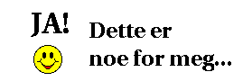
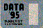

Ved å klikke på knappene under vil man få fram forskjellig informasjon om noen av tjenestene på Internett og litt om hvordan man benytter dem.
|
Norges Varemesse feirer i år sitt 75-års jubileum, og i den forbindelse vil det under Data '95 bli satt i stand verdens største Internett-Kafe, bl.a. i samarbeid med Oslonett. Over 50 terminaler vil være tilgjengelige for publikum, slik at alle kan få forsøkt seg som "surfere" på Internettet. Kafeen er lagt til hall G på Sjølyst. Har du fått mersmak på internett og world wide web? Vil du bestille et prøveabonnement hos Oslonett AS? 
|
HVORDAN FINNE FRAM?: Klikk på globusen og bli vis! EKSEMPLER PÅ KOMMERSIELL BRUK: Klikk på den kommersielle logoen og bli vis! |
![[Oslonett Home]](/gifs/on/oslonett-i.gif)

Oppdatert, 21. juni 1995, webmaster@oslonett.no